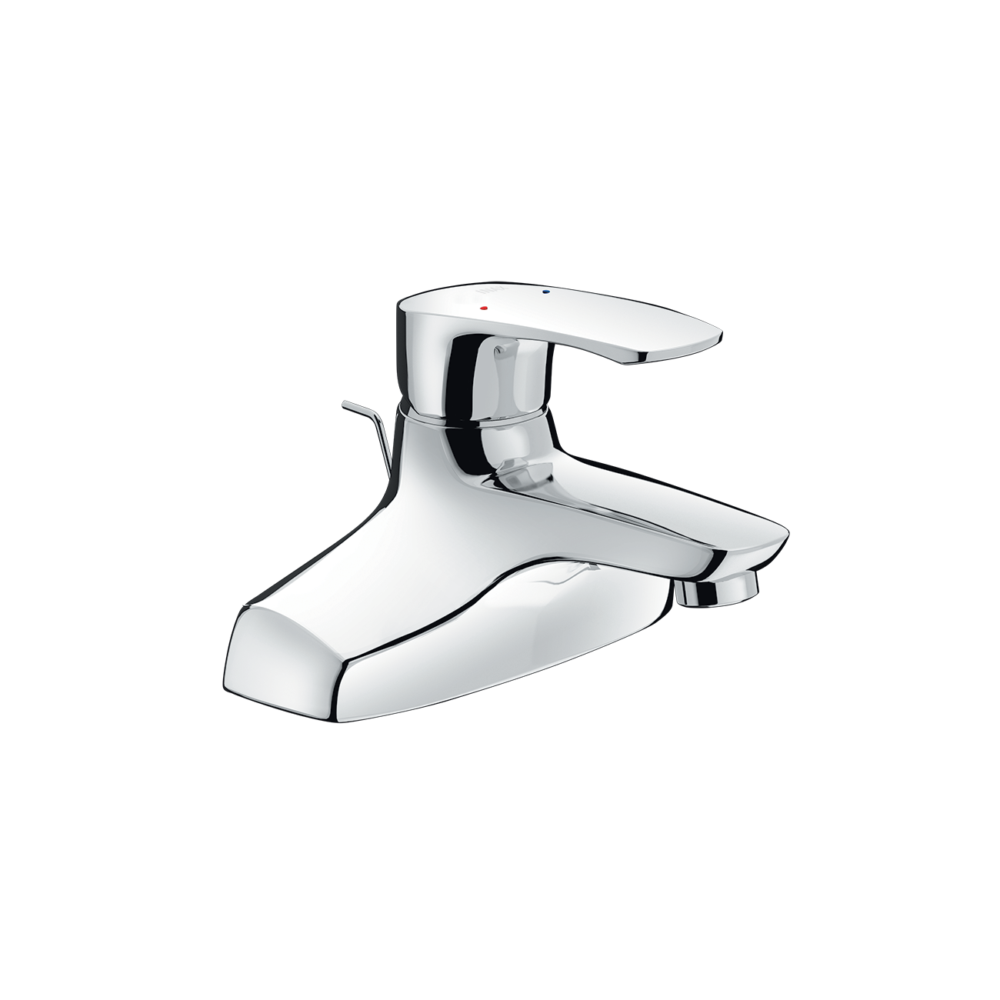
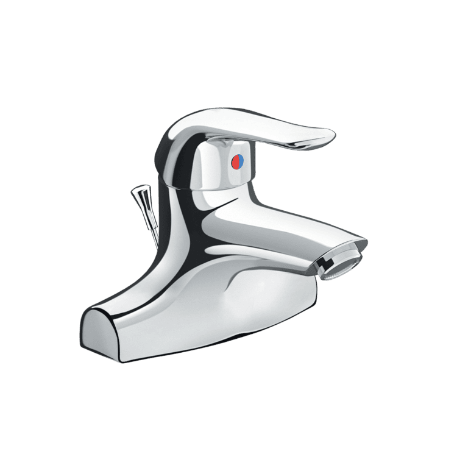
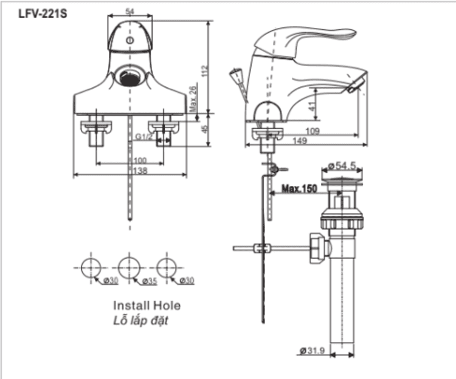

Sen vòi đơn LFV-211S là giải pháp tối ưu hóa dành riêng cho các mẫu chậu rửa lavabo 3 lỗ (EC), giúp hoàn thiện không gian phòng tắm một cách hiệu quả và tiết kiệm. Sản phẩm sở hữu thiết kế đế rộng vững chắc, cùng với chất liệu và công nghệ mạ cao cấp, đảm bảo tính thẩm mỹ và độ bền vượt trội.Thiết kế sen vòi đơn LFV-211S: Sự lựa chọn hoàn hảo cho chậu 3 lỗChuyên dụng cho chậu 3 lỗ (EC): Thiết kế đế vòi lavabo mở rộng, liền khối tạo độ vững vàng tuyệt đối và che chắn hoàn hảo các lỗ lắp đặt trên chậu, mang lại tổng thể gọn gàng, liền mạch.Kiểu dáng hiện đại, dễ vệ sinh: Các đường nét của vòi được thiết kế tối giản, tinh tế, vừa tạo sự sang trọng, vừa giúp bề mặt dễ dàng lau chùi, chống bám bẩn hiệu quả.Tay gạt tiện ích: Cần gạt nước được thiết kế gọn gàng bên cạnh, cho phép người dùng dễ dàng điều chỉnh nhiệt độ và lưu lượng nước một cách nhanh chóng và chính xác.Chất liệu Inox cao cấp và độ bền cao của LFV-211SChất liệu Inox cao cấp và Lớp mạ Cr/Ni chất lượng caoVòi LFV-211S được chế tạo từ chất liệu chủ yếu là Inox, nổi tiếng với khả năng chống gỉ sét tuyệt đối và độ bền cơ học cao. Bên ngoài được phủ thêm lớp mạ Crôm/Niken (Cr/Ni) chất lượng cao, giúp bề mặt luôn sáng bóng, chống trầy xước và giữ được vẻ đẹp như mới theo thời gian.Van điều khiển Ceramic siêu bềnLFV-211S được trang bị Van Ceramic (van điều khiển bằng sứ). Lõi van sứ có độ bền cao, chịu được áp lực nước lớn và nhiệt độ thay đổi, giúp kiểm soát dòng chảy chính xác và ngăn chặn rò rỉ nước hiệu quả.Kết cấu chắc và áp lực nước ổn địnhKết cấu bên trong vững vàng đảm bảo sự ổn định và chắc chắn khi vòi hoạt động.Vòi hoạt động tốt trong dải áp lực nước tiêu chuẩn: 0.05 - 0.75 MPa, đảm bảo dòng nước ra luôn mạnh mẽ và liên tục.Video giới thiệu vòi chậu INAXBản vẽ sen vòi đơn LFV-211SXem hướng dẫn lắp đặt LFV-211S tại đây.Thông số kỹ thuậtChất liệuĐồng thau mạ Crom-NikenLoạiVòi chậu nóng lạnhKích thước-Thiết kế- Tay gạt dẹt - Thân vòi nguyên khối, chống oxy hóa - Thiết kế dành riêng cho chậu 3 lỗThương hiệuINAXTính năng- Van Ceramic với độ bền cao - Van sứ có khả năng chịu nhiệt và chịu áp lực tốt - Áp lực nước cao: 0.05 - 0.75 MPa - Kết cấu vững vàng, chống bám bẩn, dễ vệ sinhMàu sắc-Khác- Bao gồm trụ xả (Không bao gồm ống thải chữ P) - Hotline tư vấn và bảo hành: 18006633
Sen vòi đơn LFV-211S
Vòi chậu thương hiệu INAX.
Đã cập nhật danh sách yêu thích.
DANH MỤC: Vòi chậu
MÃ SẢN PHẨM: LFV-211S
DEPTH: mm
HEIGHT: mm
WIDTH: mm
Sen vòi đơn LFV-211S là giải pháp tối ưu hóa dành riêng cho các mẫu chậu rửa lavabo 3 lỗ (EC), giúp hoàn thiện không gian phòng tắm một cách hiệu quả và tiết kiệm. Sản phẩm sở hữu thiết kế đế rộng vững chắc, cùng với chất liệu và công nghệ mạ cao cấp, đảm bảo tính thẩm mỹ và độ bền vượt trội.Thiết kế sen vòi đơn LFV-211S: Sự lựa chọn hoàn hảo cho chậu 3 lỗChuyên dụng cho chậu 3 lỗ (EC): Thiết kế đế vòi lavabo mở rộng, liền khối tạo độ vững vàng tuyệt đối và che chắn hoàn hảo các lỗ lắp đặt trên chậu, mang lại tổng thể gọn gàng, liền mạch.Kiểu dáng hiện đại, dễ vệ sinh: Các đường nét của vòi được thiết kế tối giản, tinh tế, vừa tạo sự sang trọng, vừa giúp bề mặt dễ dàng lau chùi, chống bám bẩn hiệu quả.Tay gạt tiện ích: Cần gạt nước được thiết kế gọn gàng bên cạnh, cho phép người dùng dễ dàng điều chỉnh nhiệt độ và lưu lượng nước một cách nhanh chóng và chính xác.Chất liệu Inox cao cấp và độ bền cao của LFV-211SChất liệu Inox cao cấp và Lớp mạ Cr/Ni chất lượng caoVòi LFV-211S được chế tạo từ chất liệu chủ yếu là Inox, nổi tiếng với khả năng chống gỉ sét tuyệt đối và độ bền cơ học cao. Bên ngoài được phủ thêm lớp mạ Crôm/Niken (Cr/Ni) chất lượng cao, giúp bề mặt luôn sáng bóng, chống trầy xước và giữ được vẻ đẹp như mới theo thời gian.Van điều khiển Ceramic siêu bềnLFV-211S được trang bị Van Ceramic (van điều khiển bằng sứ). Lõi van sứ có độ bền cao, chịu được áp lực nước lớn và nhiệt độ thay đổi, giúp kiểm soát dòng chảy chính xác và ngăn chặn rò rỉ nước hiệu quả.Kết cấu chắc và áp lực nước ổn địnhKết cấu bên trong vững vàng đảm bảo sự ổn định và chắc chắn khi vòi hoạt động.Vòi hoạt động tốt trong dải áp lực nước tiêu chuẩn: 0.05 - 0.75 MPa, đảm bảo dòng nước ra luôn mạnh mẽ và liên tục.Video giới thiệu vòi chậu INAXBản vẽ sen vòi đơn LFV-211SXem hướng dẫn lắp đặt LFV-211S tại đây.Thông số kỹ thuậtChất liệuĐồng thau mạ Crom-NikenLoạiVòi chậu nóng lạnhKích thước-Thiết kế- Tay gạt dẹt - Thân vòi nguyên khối, chống oxy hóa - Thiết kế dành riêng cho chậu 3 lỗThương hiệuINAXTính năng- Van Ceramic với độ bền cao - Van sứ có khả năng chịu nhiệt và chịu áp lực tốt - Áp lực nước cao: 0.05 - 0.75 MPa - Kết cấu vững vàng, chống bám bẩn, dễ vệ sinhMàu sắc-Khác- Bao gồm trụ xả (Không bao gồm ống thải chữ P) - Hotline tư vấn và bảo hành: 18006633
DANH MỤC: Vòi chậu
MÃ SẢN PHẨM: LFV-211S
DEPTH: mm
HEIGHT: mm
WIDTH: mm